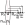

Lens Maker's Equation Calculator
Input Parameters:
nₗ = Lens refractive index
nₘ = Medium refractive index
R₁ = First surface radius
R₂ = Second surface radius
d = Lens thickness
nₗ = Lens refractive index
nₘ = Medium refractive index
R₁ = First surface radius
R₂ = Second surface radius
d = Lens thickness

$$\frac{1}{f} = \frac{n_\text{lens}-n_\text{med}}{n_\text{med}}\left(\frac{1}{R_1}-\frac{1}{R_2}\right) +
\frac{(n_\text{lens}-n_\text{med})d}{n_\text{lens} R_1 R_2}$$
f = ?
$$\text{BFL|FFL} = f \left(1 \mp \frac{d(n_\text{lens}-n_\text{med})}{n_\text{lens} R_{2|1}}\right)$$
BFL | FFL = ?
$$P = \frac{1000 n_\text{med}}{f}$$
P = ? D
Output Parameters:
f = Focal length
BFL = Back focal length
FFL = Front focal length
P = Lens power (D)
f = Focal length
BFL = Back focal length
FFL = Front focal length
P = Lens power (D)